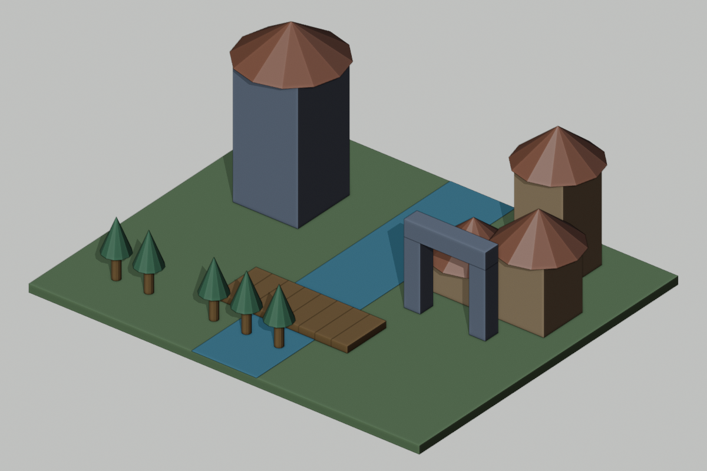

Your assignment today
- First: learn the explanation and watch today’s two demonstrations with your teacher.
- Then: try the two guided questions before looking at their solutions.
- Finish: work sections 1: Explain training versus use; 2: Use the grade-specific data task; 3: Make two usable signs; 4: Run and record a user test.
- Write here: your printed sheet,notebook,or usual school document. Label it Day 8 and your design ID. This website does not save written responses.
- Turn in: the required sections,one prediction/evidence/revision statement,and the six-question check in the format your teacher assigns.
- Finished early: select a continued-practice section or ChoiceA. You do not need to finish every optional task.
Start here • today’s change • finish here
Today: Add two panels and agreed destination labels.


These are actual Blender renders of prepared reference scenes. Your class may choose different colors/details or defer a build. Compare measurements,not just appearance. On Days2,9,and10,the visible geometry may stay the same while planning,testing,or archiving advances.
TODAY’S FINISHED PRODUCT
Two sign designs; distinguish AI use from learning
What you actually do
1. Read the short reading. 2. Complete the must-do sections listed below in your own paper journal or school document;the remaining sections are continued practice. 3. Compare with a partner when told. 4. Keep working while the teacher operates Blender. 5. Record what passed or needs fixing. 6. Submit your work and check.
You do not open Blender or an AI account. The teacher submits one class request. If your design is not selected,you still submit your own thinking.
Learn this before doing today’s work
How to use this section: read the six explanations,follow the worked examples,then try the two guided questions. Your teacher will discuss them before assigning independent work. Return to the numbered explanation if you need help with a check question.
1. Training and inference are different processes
Training changes a model through examples and a learning process. Inference means using an already trained model to produce an answer or prediction. Typing another prompt normally supplies input/context for inference;it is not evidence that the underlying model was retrained. Human learning can involve physical experience,goals,social explanation,and reflection;machine learning follows a designed pattern-learning process.
2. Compare groups before making a claim
A test result is correct answers divided by tested examples. Comparing groups can reveal a performance gap that an overall score hides. A gap in this sample is evidence of differing measured performance,not proof of its cause. Fewer training examples,harder images,or other differences might contribute;investigation would be needed.
3. Calculate a percentage step by step
Accuracy percent=(correct/total)×100. First divide,then multiply by100. If6 of8 signs are correct,6÷8=.75 and .75×100=75%. A100% group rate means every tested item in that group was correct,not every possible future item. Do not average group percentages blindly when group sizes differ;combine correct and total counts.
4. Use more than color for a sign
A non-color cue communicates through words,shapes,arrows,patterns,or another usable channel. A green square alone may not identify the destination or direction. “MARKET →” adds destination text and an arrow. Test against explicit criteria with a user;one partner’s success is limited evidence,not a guarantee that all visitors can use it.
5. Unsupervised learning looks for patterns without supplied labels
A label is a supplied category,such as “bridge sign” or “gate sign.” Unsupervised pattern finding groups records using similarities when those category labels are not supplied. Hand-grouping number cards is a classroom model of that idea,not training a real system. Different features can produce different groupings;state which feature and rule you use.
6. Toy data and inclusive evaluation have limits
Our sign numbers are invented examples for reasoning. They reveal nothing definite about the actual AI service’s training set,privacy policy,or accuracy. A training set supplies examples for learning;a held-out test set stays separate to evaluate behavior on new examples. Broader representation may help uncover gaps,but adding data alone does not guarantee fairness or accessibility.
Watch how it is done
Choose Play for a captioned demonstration,or use Next step to move at your own pace. Each example takes about20 seconds to reach its last step;pause as long as you need. Use the class task’s own numbers when you begin your work.
See where group and overall accuracy come from
Animated teaching diagram · silent captions · 1 world unit = 1 meter. These are worked examples, not a recording of Blender.
Group unlabeled cards by a stated feature
Animated teaching diagram · silent captions · 1 world unit = 1 meter. These are worked examples, not a recording of Blender.
Read the original written steps
Calculate group and total results
Example:large signs6/6 correct;small signs2/4. Rates100% and50%. Overall=(6+2)/(6+4)=8/10=80%,not the simple average75%. Supported claim:performance differs in this test. Unsupported claim:we proved exactly why the classifier failed.
Group unlabeled cards
Cards P(height8,width2),Q(9,2),R(3,5),S(4,5). Height rule:≥6 gives P/Q;below6 gives R/S. Width rule:width2 gives P/Q;width5 gives R/S. You described patterns without destination labels. A different dataset or feature may produce different clusters.
Try together before working independently
Write or say your answer first. Then open the explanation and compare your method,not only your final value.
Guided practice 1
A model is trained yesterday. Today we ask it to design a sign. What process is today’s request?
Compare your answer and reasoning
Inference/use of the trained model. The new prompt does not prove a new training step occurred.
Guided practice 2
Three of four test signs are correct. Find accuracy and one limitation.
Compare your answer and reasoning
3÷4×100=75%. It describes those four tests;it does not guarantee75% performance for all signs or establish the cause of an error.
Help for the worksheet and extra choices
Dataset memo:each row describes an example’s features and intended label;keep four separate new rows for held-out tests. Clustering task:height and width are features;labels are destination categories. Inclusion review:describe which design rule may exclude a user and propose a testable alternative;do not assign abilities or occupations by stereotypes. Compare signs before/after the user test with the same question.
Connect the idea to our class world
Using a trained model to produce an answer is often called inference. Training changes a model using data and a learning process. Entering a new prompt normally supplies context for that use; it is not evidence that the underlying model has been retrained. Services may have separate memory or data-use policies, but we cannot infer those policies from one chat. Humans can learn through experience, physical action, goals, and social explanation. Machine learning systems find patterns through a designed training process; a fluent response does not establish human understanding.
Training data can shape what a system handles well. A small classroom dataset is not a diagnosis of our actual AI model. We will use a toy example to reason about possible bias. Suppose a sign classifier is trained on 12 signs: 10 have large print, 2 small print; all are in one language. Its test results are 8 correct of 8 large-print signs, but 1 correct of 4 small-print signs. That suggests a performance gap worth investigating. It does not prove the cause or performance on every language.
Accessible design needs specific criteria and user feedback. Our signs will use words plus symbols, clear contrast, and a route map, rather than color alone. A fantasy world can include many kinds of residents without assigning abilities or jobs by stereotypes. We can improve our design while admitting what we have not tested.
Today’s assignment size
Must do: numbered work sections 1, 2, 3, 4,the evidence/revision sentence,and the six-question check. Other numbered sections are continued practice if time allows,unless your teacher assigns one as your grade-specific task. Finish required thinking before starting an optional card. Grade7 on Day8 completes the unlabeled-pattern task in section2.
All students receive the teaching above;optional work is not a prerequisite for answering the check. If the class needs longer instruction,complete fewer practice cases or use the next class’s retrieval time for the remaining evidence. Do not skip the explanation to fit every extension.
Your four work sections
Design ID:________________ Grade:____ Date:__________
1. Explain training versus use
Classify A:changing model weights with examples;B:asking the existing AI for a sign;C:a classmate testing your sign. Write one difference between human learning and machine learning and one limitation of a fluent AI answer.
Finished when you have: Three classifications and two explanations.
2. Use the grade-specific data task
Grades 6/8:data says large-print 8/8 correct, small-print 1/4, overall 9/12. Calculate all three percentages. Write one supported claim and one claim the data cannot support. Grade 7 instead:group unlabeled A(10, 4), B(11, 4), C(3, 2), D(4, 2), E(10, 5), F(3, 3) by height;then regroup by width. State your two rules and explain why grouping without destination labels models unsupervised pattern finding.
Finished when you have: Either three rates+two claims OR two clusterings+rules+learning explanation.
3. Make two usable signs
Draw a BRIDGE sign and GATE sign. Each needs destination text, a direction cue, and a non-color way to distinguish it. Under the drawings write three criteria:destination identifiable;direction identifiable;meaning not dependent on color.
Finished when you have: Two signs and three explicit criteria.
4. Run and record a user test
Hide your labels underneath the drawings, show only the signs to your partner, and ask “Where would you go?” Record their answers without coaching. Compare with your intended answers, change one sign, and repeat that question. State one limit of testing with one partner.
Finished when you have: Before/after test results, one revision, and one limitation.
When the teacher says “independent work”
Broaden the toy training examples
Propose six additional sign records with print size, language/symbol type, and intended destination. Then propose four different held-out test signs. Explain why testing on the same examples used for training would be weak evidence. Grade 7 may do this only after the pattern task is complete.
After the class checks the result
Complete: “I predicted____. Our evidence source was____(actual scene/report/paper trace/simulated). It showed____. I changed or confirmed____because____. We still do not know____.”
Grade target
- Grade 6: Provide percentage fractions or teacher-computed rates;require the supported/unsupported claims and human/machine comparison.
- Grade 7: Pattern grouping replaces accuracy calculations in core;complete both groupings and explain unlabeled patterns.
- Grade 8: Calculate rates independently and propose one controlled test of a possible cause without claiming the toy sample proves it.
What to turn in
Submit work sections 1: Explain training versus use; 2: Use the grade-specific data task; 3: Make two usable signs; 4: Run and record a user test. Add your prediction/evidence/revision statement and the six-question check. Other numbered sections and choice cards are continued practice unless your teacher substitutes one for a grade-specific task.
Finished early? Choose one.
These are extra choices after your required work;your teacher can assign one in place of waiting work. Read the finished-product requirement before you start.
Grade 7 pattern lab
Use unlabeled sign records A=(height10,width4), B=(11,4), C=(3,2), D=(4,2), E=(10,5), F=(3,3). Group by patterns without destination labels and state your rule. Regroup using a different feature. Explain how these hand groupings model the idea of unsupervised learning, and why they are not an actual trained model.
Turn in: Two cluster diagrams, two rules, and a model/real-system distinction.
Inclusive design hearing
Review this proposal: “All guards are strong boys; all healers are girls; make the only directions red and green arrows.” Identify three exclusion risks. Write a six-rule design policy, redesign two roles without stereotypes, and create a two-user test plan including a user who cannot distinguish the colors.
Turn in: Risk analysis, six rules, role revisions, user-test plan.
Challenge the causal claim
Someone says small-print accuracy is low ONLY because there were fewer small-print training signs. Give two alternative causes, design a controlled comparison, and name two conclusions the small toy sample cannot justify.
Turn in: Your supported explanation,trace,or revised plan.
If technology fails
Read the supplied toy dataset on paper; draw signs and exchange them for the navigation test. If vision or reading access is a barrier, offer large-print/tactile verbal descriptions and have students test the communication criterion using an accessible mode. No live AI is needed.
Shared-world reference strip
Ground24×20,top z=0. x=east/west,y=north/south,z=up. Tower body4×4×8,center(-7,4,4);roof radius3,depth2,center(-7,4,9). River x=-2 to2. Bridge8 planks,centers x=-3.5+i for i0–7,y=-4,z=.2;each1×3×.4. Homes H1(5,3,h2),H2(9,3,h4),H3(7,7,h6):body3×3×h,center z=h/2;roof depth2,center z=h+1. Grove:6 candidates,x=-9+2*i,y=-7,skipx=-5. Gate:posts x4 and8,width1,height4;lintel center(6,0,4.5),size5×1×1;gap3,clearance4. Required route width≥2. These are requirements until measured.